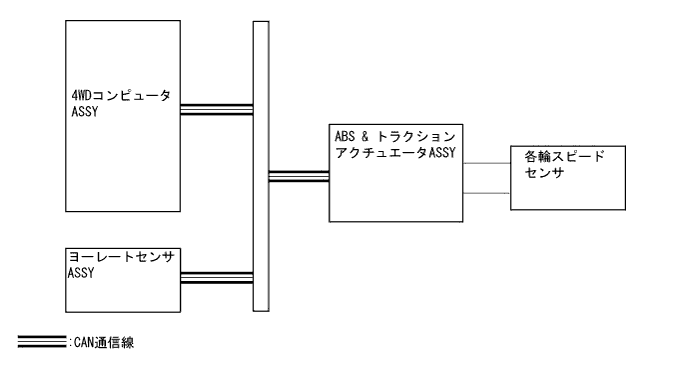

DTC C1296/96 ABS System Malfunction |
| DTC No. | DTC Detection Condition | Inspection Area |
|---|---|---|
| C1296/96 | Speed sensor malfunction signal is received from the skid control computer |
|

| Step 1 | Read DTC |
Connect SST (TaSCAN) to DLC3.
Turn the ignition switch ON and, following the SST (TaSCAN) screen display, read the DTCs of the ABS with EBD & TRC & VSC & BA system.
for reference.Check whether, in addition to DTC C1296/96, speed sensor malfunction codes (C0200/31, C0205/32, C0210/33, C0215/34, C1235/35, C1236/36, C1238/38C1239/39) and yaw rate sensor (G sensor) malfunction codes (C1243/43, C1244/44, C1245/45, C1336/39, C1381/97, U0124/95) of the ABS & TRC & VSC & BA system with EBD are output.
| Result | Proceed to |
|---|---|
| Speed sensor malfunction or G sensor malfunction code is not output | A |
| Speed sensor malfunction or G sensor malfunction code is output | B |
|
| ||||
| A | |
| Step 2 | Inspect ECU Data Monitor (Speed Sensor) |
Using SST (TaSCAN), inspect the speed sensor output value. (see)
|
| ||||
| OK | ||
| ||